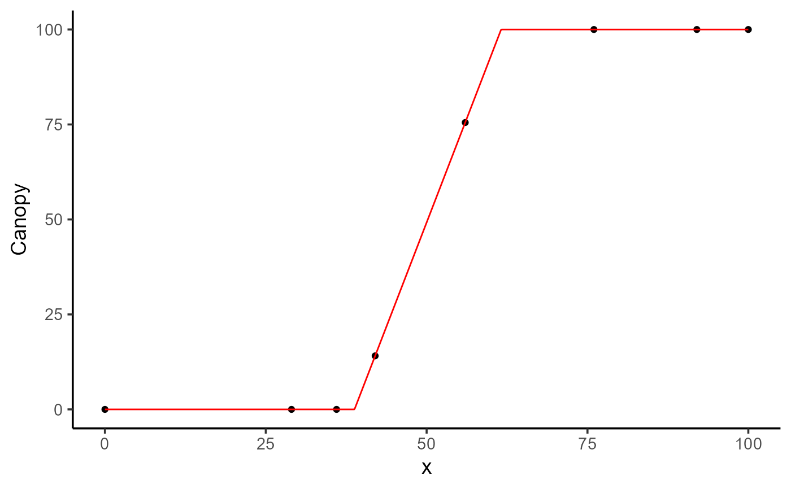
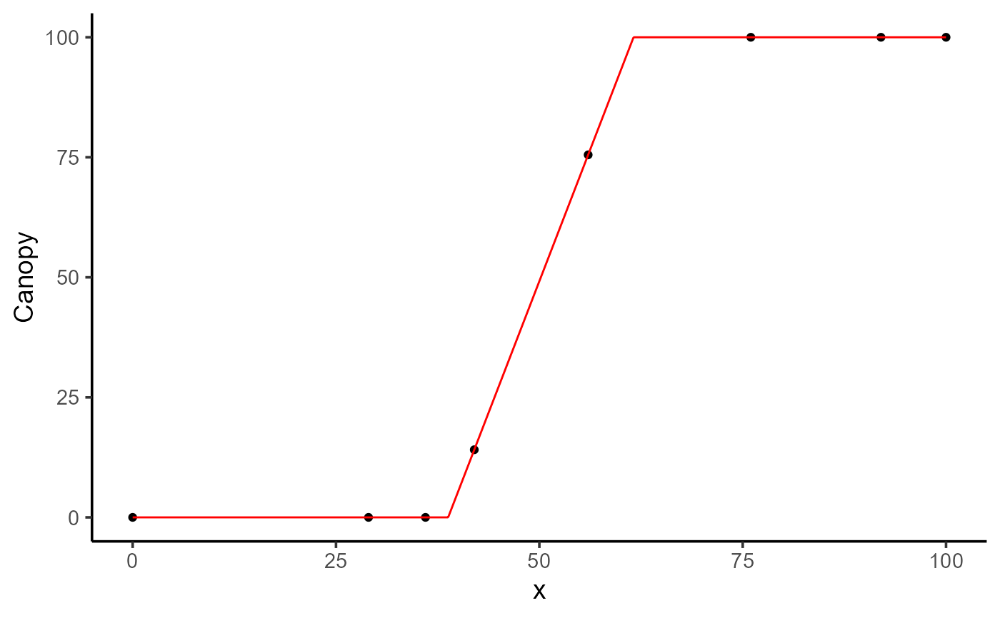

A versatile function for performing non-linear least squares optimization on grouped data. It supports customizable optimization methods, flexible initial/fixed parameters, and parallel processing.
Arguments
- data
A `data.frame` containing the input data for analysis.
- x
The name of the column in `data` representing the independent variable (x points).
- y
The name of the column in `data` containing the dependent variable to analyze (response variable).
- grp
Column(s) in `data` used as grouping variable(s). Defaults to `NULL`. (optional)
- keep
Names of columns to retain in the output. Defaults to `NULL`. (Optional)
- fn
A string. The name of the function used for curve fitting. Example: `"fn_linear_sat"`. Defaults to
"fn_linear_sat".- parameters
A numeric vector, named list, or `data.frame` providing initial values for parameters:
- Numeric vector
Named vector specifying initial values (e.g., `c(k = 0.5, t1 = 30)`).
- Data frame
Requires a `uid` column with group IDs and parameter values for each group.
- List
Named list where parameter values can be numeric or expressions (e.g., `list(k = "max(y)", t1 = 40)`).
Defaults to `NULL`.
- lower
A numeric vector specifying lower bounds for parameters. Defaults to `-Inf` for all parameters.
- upper
A numeric vector specifying upper bounds for parameters. Defaults to `Inf` for all parameters.
- fixed_params
A list or `data.frame` for fixing specific parameters:
- List
Named list where parameter values can be numeric or expressions (e.g., `list(k = "max(y)", t1 = 40)`).
- Data frame
Requires a `uid` column for group IDs and fixed parameter values.
Defaults to `NULL`.
- method
A character vector specifying optimization methods. Check available methods using
list_methods()and their dependencies usingoptimx::checkallsolvers(). Defaults toc("subplex", "pracmanm", "anms").- subset
A vector (optional) containing levels of `grp` to filter the data for analysis. Defaults to `NULL` (all groups are included).
- options
A list of additional options. See `modeler.options()`
progressLogical. If
TRUEa progress bar is displayed. Default isFALSE. Try this before running the function:progressr::handlers("progress", "beepr").parallelLogical. If
TRUEthe model fit is performed in parallel. Default isFALSE.workersThe number of parallel processes to use. `parallel::detectCores()`
traceIf
TRUE, convergence monitoring of the current fit is reported in the console.FALSEby default.return_methodLogical. If
TRUE, includes the optimization method used in the result. Default isFALSE.
- control
A list of control parameters to be passed to the optimization function. For example:
list(maxit = 500).
Value
An object of class modeler, which is a list containing the following elements:
paramData frame containing optimized parameters and related information.
dtData frame with input data, fitted values, and residuals.
metricsMetrics and summary of the models.
executionTotal execution time for the analysis.
responseName of the response variable analyzed.
keepMetadata retained based on the `keep` argument.
funName of the curve-fitting function used.
parallelList containing parallel execution details (if applicable).
fitList of fitted models for each group.
Examples
library(flexFitR)
data(dt_potato)
explorer <- explorer(dt_potato, x = DAP, y = c(Canopy, GLI), id = Plot)
# Example 1
mod_1 <- dt_potato |>
modeler(
x = DAP,
y = GLI,
grp = Plot,
fn = "fn_lin_pl_lin",
parameters = c(t1 = 38.7, t2 = 62, t3 = 90, k = 0.32, beta = -0.01),
subset = 195
)
plot(mod_1, id = 195)
 print(mod_1)
#>
#> Call:
#> GLI ~ fn_lin_pl_lin(DAP, t1, t2, t3, k, beta)
#>
#> Residuals:
#> Min. 1st Qu. Median Mean 3rd Qu. Max.
#> -0.011076 -0.001003 0.000000 -0.001886 0.000000 0.000000
#>
#> Optimization Results `head()`:
#> uid t1 t2 t3 k beta sse
#> 195 40.1 63.1 91.4 0.325 -0.00809 0.000139
#>
#> Metrics:
#> Groups Timing Convergence Iterations
#> 1 1.2995 secs 100% 3156 (id)
#>
# Example 2
mod_2 <- dt_potato |>
modeler(
x = DAP,
y = Canopy,
grp = Plot,
fn = "fn_linear_sat",
parameters = c(t1 = 45, t2 = 80, k = 0.9),
subset = 195
)
plot(mod_2, id = 195)

print(mod_2)
#>
#> Call:
#> Canopy ~ fn_linear_sat(DAP, t1, t2, k)
#>
#> Residuals:
#> Min. 1st Qu. Median Mean 3rd Qu. Max.
#> -1.201e-09 0.000e+00 1.911e-10 1.031e-10 3.823e-10 8.791e-10
#>
#> Optimization Results `head()`:
#> uid t1 t2 k sse
#> 195 38.8 61.6 100 2.65e-18
#>
#> Metrics:
#> Groups Timing Convergence Iterations
#> 1 0.8072 secs 100% 351 (id)
#>
print(mod_1)
#>
#> Call:
#> GLI ~ fn_lin_pl_lin(DAP, t1, t2, t3, k, beta)
#>
#> Residuals:
#> Min. 1st Qu. Median Mean 3rd Qu. Max.
#> -0.011076 -0.001003 0.000000 -0.001886 0.000000 0.000000
#>
#> Optimization Results `head()`:
#> uid t1 t2 t3 k beta sse
#> 195 40.1 63.1 91.4 0.325 -0.00809 0.000139
#>
#> Metrics:
#> Groups Timing Convergence Iterations
#> 1 1.2995 secs 100% 3156 (id)
#>
# Example 2
mod_2 <- dt_potato |>
modeler(
x = DAP,
y = Canopy,
grp = Plot,
fn = "fn_linear_sat",
parameters = c(t1 = 45, t2 = 80, k = 0.9),
subset = 195
)
plot(mod_2, id = 195)

print(mod_2)
#>
#> Call:
#> Canopy ~ fn_linear_sat(DAP, t1, t2, k)
#>
#> Residuals:
#> Min. 1st Qu. Median Mean 3rd Qu. Max.
#> -1.201e-09 0.000e+00 1.911e-10 1.031e-10 3.823e-10 8.791e-10
#>
#> Optimization Results `head()`:
#> uid t1 t2 k sse
#> 195 38.8 61.6 100 2.65e-18
#>
#> Metrics:
#> Groups Timing Convergence Iterations
#> 1 0.8072 secs 100% 351 (id)
#>